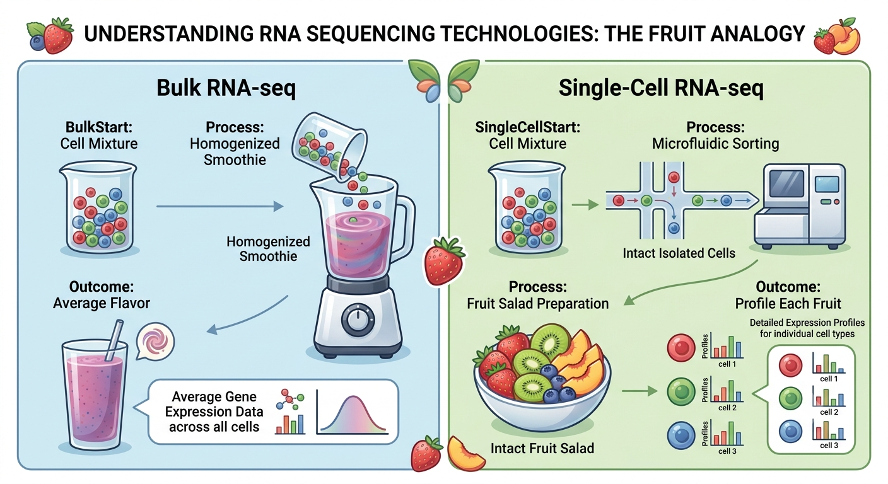

3 The Sequencing Revolution
3.1 Introduction: The Genomic Paradigm Shift
The ability to read the precise sequence of nucleotides in a DNA molecule is a cornerstone of modern biology and medicine. For nearly three decades following its inception in 1977, genomic science was defined by Frederick Sanger’s chain-termination method (Sanger et al. 1977). While Sanger sequencing successfully delivered the first draft of the human genome, the approach was fundamentally limited: it could only process one DNA fragment per capillary at a time. The monumental effort to sequence that first human genome took over a decade and cost approximately $2.7 billion, highlighting the limitations of this approach for large-scale genomic inquiry (Reuter et al. 2015).
The early 2000s saw a paradigm shift driven by the invention of High-Throughput Sequencing (HTS), commonly referred to as Next-Generation Sequencing (NGS) (Soon et al. 2013). By parallelizing millions to billions of sequencing reactions simultaneously on a solid flow-cell surface, NGS plummeted the cost of sequencing a human genome faster than Moore’s Law—down to under $1,000 in less than a day.
For a modern researcher, the objective is not to memorize obsolete chemical protocols, but to master the fundamental technological trade-offs of these platforms:
Read Length vs. Accuracy vs. Cost: How short quantitative reads (Illumina) contrast with single-molecule long reads (PacBio, ONT).
Bulk Averages vs. Single-Cell Resolution: How single-cell transcriptomics (scRNA-seq) deconvolutes tissue heterogeneity.
Sequence Disruption vs. Spatial Context: How spatial transcriptomics maps gene expression back to its native histological framework.
3.2 The Generational Evolution of Sequencing
| Generation | Representative Platforms | Read Length | Error Rate | Primary Strengths | Major Limitations |
|---|---|---|---|---|---|
| 1st Gen | Sanger (ABI 3730xl) | 600–1,000 bp | ~0.001% (Q50) | Gold-standard accuracy, targeted validation | Very low throughput, high cost per megabase |
| 2nd Gen (NGS) | Illumina, Ion Torrent | 50–300 bp | ~0.1% (Q30) | Massive throughput, lowest cost/base, ideal for quantitative counts | Repetitive regions unresolvable, blind to large structural variants |
| 3rd Gen (Long-Read) | PacBio SMRT, Oxford Nanopore (ONT) | 10 kb – >1 Mb | <0.1% (HiFi) / ~1% (ONT) | De novo genome assembly, structural variants, direct methylation | Higher per-run reagent costs, lower raw read count |
3.3 First-Generation Sequencing (Sanger Sequencing)
Sanger sequencing is based on in vitro DNA replication using a carefully balanced mixture of standard deoxynucleotides (dNTPs) and modified dideoxynucleotides (ddNTPs) (Sanger et al. 1977).
3.3.1 The Chemistry of Chain Termination
The core chemical mechanism relies on the structural difference between dNTPs and ddNTPs. Standard dNTPs possess a 3’-hydroxyl (-OH) group on the deoxyribose sugar, which is chemically required by DNA polymerase to form a phosphodiester bond with the next incoming nucleotide. In contrast, ddNTPs lack this 3’-OH group.
During synthesis, DNA polymerase extends a primer complementary to the template strand. When the polymerase randomly incorporates a fluorescently tagged ddNTP instead of a standard dNTP, synthesis is terminated because no further nucleotides can be attached to the missing 3’ position. This reaction produces a collection of DNA fragments of every possible length, each ending with a specific, color-tagged base.
These fragments are separated by size using high-resolution capillary electrophoresis, where a laser excites the fluorescent tags as they pass a detector window. This generates an electropherogram of colored peaks, representing the exact nucleotide sequence.
3.3.2 Enduring Significance
While Sanger sequencing cannot compete with NGS for high-throughput discovery, it remains an indispensable, highly active analytical anchor:
Validation: It is the regulatory and experimental “gold standard” for confirming novel single-nucleotide variants (SNVs) identified by NGS.
Targeted Assays: It is the most cost-effective method for verifying plasmid cloning, checking CRISPR gene-editing edits, and sequencing individual genes in monogenic clinical diagnostics.
3.4 Second-Generation Sequencing (Massively Parallel Short-Read Platforms)
Second-generation sequencing (NGS) completely bypassed the single-capillary bottleneck by performing clonal amplification and sequencing-by-synthesis on flat solid surfaces (Soon et al. 2013).
3.4.1 The Illumina Flow
The dominant short-read workflow involves three unified stages:
Library Preparation: Genomic DNA is fragmented (200–500 bp), end-repaired, A-tailed, and ligated to synthetic adapters. These adapters contain unique barcodes (or indices) that allow researchers to pool hundreds of different samples into a single sequencing run (multiplexing).
Clonal Amplification (Bridge PCR): To generate a signal strong enough for optical detection, single molecules must be amplified in situ. Library fragments are loaded onto a glass flow cell coated with a lawn of oligonucleotides. Individual strands bend over to hybridize with adjacent complementary oligos, forming “bridges.” Repeated cycles of solid-phase PCR amplify each single molecule into a localized “cluster” containing thousands of identical clonal copies.
Sequencing-by-Synthesis (SBS): Universal primers hybridize to the clusters. The flow cell is flooded with a mixture of four nucleotides, each containing a unique fluorescent dye and a reversible chemical block on the 3’-OH group (Bentley et al. 2008). DNA polymerase incorporates exactly one complementary nucleotide into each cluster. The 3’ block prevents further incorporation. A laser excites the dyes, a camera captures the cluster’s color, the fluorescent tag and 3’ block are chemically cleaved to regenerate a free 3’-OH, and the cycle repeats.
3.4.2 The Semiconductor Alternative: Ion Torrent
Instead of relying on fluorescence and expensive optical cameras, the Ion Torrent platform translates chemical reactions directly into digital information on a semiconductor chip (Rothberg et al. 2011).
The Chemistry: During natural DNA polymerization, the incorporation of a dNTP releases a single hydrogen ion (\(H^+\)) as a byproduct of phosphodiester bond formation.
The Sensor: Clonally amplified templates on beads are loaded into millions of microwells on an Ion Chip™. Beneath each well lies an Ion-Sensitive Field-Effect Transistor (ISFET)—essentially a highly sensitive pH meter. As the sequencer floods the chip with individual dNTPs sequentially, any incorporation releases an \(H^+\) ion, altering the local pH. The ISFET translates this chemical pH shift directly into a voltage spike, bypassing the need for lasers, dyes, and cameras.
3.4.3 Why Roche 454 Matters Historically
The Roche 454 pyrosequencing platform (released in 2005) was the historically pioneering next-generation sequencer (Margulies et al. 2005). It introduced the concept of emulsion PCR (emPCR)—clonally amplifying single DNA fragments on microscopic beads inside water-in-oil droplets—and detected nucleotide incorporation via a light-emitting enzymatic cascade (pyrosequencing).
While historically revolutionary for breaking the Sanger capillary bottleneck, Roche 454 was discontinued over a decade ago. It suffered from high reagent costs and, like Ion Torrent, struggled with homopolymer regions (stretches of identical nucleotides like AAAAAA). Because all identical bases in a homopolymer incorporate simultaneously, the system had to estimate the run length based on the magnitude of the light flash or voltage spike. This non-linear signal response introduced high rates of insertion and deletion (indel) errors.
3.4.4 The Short-Read Trade-off: High Throughput vs. Assembly Blind Spots
Short-read platforms produce billions of highly accurate (\(Q30+\), or \(>99.9\%\)) reads. This makes them exceptionally powerful for quantitative “counting” applications, such as counting transcript abundance (RNA-seq) or mapping protein-DNA interactions (ChIP-seq).
However, because the reads are short (50–300 bp), they are fundamentally blind to large structural variations, gene duplications, and repetitive elements. Assembling a complex genome with short reads is akin to putting together a massive jigsaw puzzle made of millions of tiny, identical blue-sky pieces (Reuter et al. 2015).
3.5 Third-Generation Sequencing (Native Single-Molecule Long Reads)
Third-generation sequencing solved the assembly puzzle by generating exceptionally long reads (tens of kilobases to megabases) from single, native DNA or RNA molecules, completely bypassing PCR amplification and its associated GC-content biases (Reuter et al. 2015).
3.5.1 Pacific Biosciences (PacBio) SMRT Sequencing
PacBio SMRT (Single-Molecule, Real-Time) sequencing utilizes nanoscale observation chambers called Zero-Mode Waveguides (ZMWs) (Eid et al. 2009).
The Chemistry: ZMWs are tiny holes in a metal film deposited on a glass slide. The physics of the ZMW restricts the laser illumination volume to the bottom few zeptoliters of the chamber. A single DNA polymerase is anchored at the bottom.
Phospholinked Nucleotides: PacBio uses nucleotides where the fluorescent dye is attached to the terminal phosphate chain, rather than the base. As the polymerase incorporates a nucleotide, the dye is held in the ZMW’s detection zone for milliseconds, emitting a stable light pulse. When the phosphodiester bond forms, the polymerase cleaves the phosphate chain, releasing the dye, which naturally diffuses away. This leaves a completely unmodified, natural DNA strand, allowing the polymerase to synthesize continuously over tens of kilobases.
High-Fidelity (HiFi) Reads: To overcome the historically high raw error rate (~1%) of single-molecule sequencing, PacBio developed Circular Consensus Sequencing (CCS). Linear DNA is circularized with hairpin adapters into a template called a SMRTbell™. The polymerase sequences around the circular template continuously. By aligning and comparing these multiple “passes” of the same molecule, random stochastic errors are computationally averaged out, yielding 15–20 kb long reads with an accuracy exceeding 99.9% (\(Q30\)), matching Illumina accuracy (Jain et al. 2018).
Direct Methylation Detection: Because the instrument monitors the polymerase in real-time, it can measure the exact time between fluorescent pulses, known as the interpulse duration (IPD). When the polymerase encounters a methylated base (e.g., 5mC or 6mA) on the native template, it hesitates. This kinetic signature allows PacBio to map the epigenome directly during sequencing without bisulfite conversion.
3.5.2 Oxford Nanopore Technologies (ONT)
ONT represents a complete departure from sequencing-by-synthesis. It measures disruptions in an electrical current as a single-stranded native DNA or RNA molecule is pulled through a biological protein nanopore embedded in an electrically resistant synthetic membrane (Jain et al. 2018).
The Mechanism: A constant voltage is applied across the membrane, establishing a baseline ionic current through the nanopore. A motor protein unwinds the double helix and feeds a single strand through the pore.
The Signal: As different combinations of nucleotides pass through the physical bottleneck of the pore, they block the ionic flow to varying degrees. This block creates characteristic current disruptions. Sophisticated deep-learning algorithms (neural networks) translate these electrical current squiggles into base calls in real-time.
Key Strengths: ONT’s read lengths are limited only by the physical integrity of the input DNA, routinely yielding reads over 100 kb (and up to several megabases). Furthermore, ONT devices are highly scalable: the pocket-sized, USB-powered MinION enables real-time field epidemiology and clinical diagnostics at the point of care.
3.6 Single-Cell RNA Sequencing (scRNA-seq)
While bulk transcriptomics measures the average expression profile of millions of homogenized cells, single-cell RNA sequencing (scRNA-seq) profiles the transcriptomes of thousands of individual cells, resolving cellular heterogeneity (Hwang et al. 2018).

3.6.1 Droplet-Based Microfluidics & Barcoding
Droplet-based microfluidics (such as the 10x Genomics Chromium platform) encapsulates individual cells into nanoliter-scale oil droplets containing a single hydrogel bead, forming a Gel Bead-in-Emulsion (GEM). The hydrogel beads are coated with unique oligonucleotide primers.
To understand single-cell quantification, we need to grasp the distinct functions of two barcodes on these primers:
Cell Barcode (CB): A shared sequence unique to all primers on a single bead. All mRNA transcripts captured within a single droplet receive this identical Cell Barcode during reverse transcription. This allows researchers to pool all molecules for sequencing and later group the reads back to their cell of origin.
Unique Molecular Identifier (UMI): A short, highly random sequence unique to each individual primer molecule on the bead (Hwang et al. 2018). Every captured mRNA transcript is tagged with a distinct UMI prior to PCR amplification.
Because PCR amplifies different sequences unevenly (PCR bias), simply counting reads overestimates highly amplified transcripts. By collapsing identical reads that share both the same Cell Barcode and the same UMI, bioinformaticians count the absolute number of original mRNA molecules, achieving true digital transcript quantification.
3.7 Spatial and Multi-Omic Frontiers
Modern systems biology is pushing past the boundaries of standard single-cell transcriptomics by capturing spatial context and integrating multiple molecular layers simultaneously.
3.7.1 Spatial Transcriptomics
While scRNA-seq reveals what cell types are present, the enzymatic dissociation of the tissue destroys its spatial coordinates. Spatial Transcriptomics (ST) resolves this by measuring gene expression while preserving the native physical organization of the tissue section. There are two primary methodologies:
Sequencing-Based (e.g., 10x Genomics Visium): A tissue section is placed on a glass slide containing an array of microscopic capture spots. Each spot contains oligos with a unique spatial barcode. The tissue is permeabilized, and the released mRNA is captured on the spots. The captured transcripts are reverse transcribed into barcoded cDNA and sequenced. The spatial barcodes allow researchers to map the transcriptome-wide expression data back onto a high-resolution histological image of the tissue.
Imaging-Based In Situ (e.g., MERFISH, seqFISH): These methods utilize high-resolution fluorescence microscopy to directly visualize individual transcripts inside intact cells. To overcome the spectral limitations of microscopy (which can normally only resolve 3–4 distinct colors), these platforms use combinatorial probe design and sequential imaging rounds. Each target gene is assigned a unique binary barcode (e.g., Gene A =
101). Over multiple rounds of hybridization, imaging, and chemical stripping, the microscope records which transcripts fluoresce (“1”) or remain dark (“0”). Compiling these sequential images decodes the barcodes, allowing researchers to map and count thousands of pre-selected transcripts at subcellular resolution.
3.7.2 Single-Cell Multi-omics
Rather than measuring just one molecular layer, researchers can now profile multiple “omes” within the exact same single cell:
CITE-seq: Uses antibody-derived DNA tags to simultaneously measure cell-surface proteins and the whole transcriptome from single cells (Stoeckius et al. 2017).
Single-Cell Multiome: Integrates chromatin accessibility (scATAC-seq) and gene expression (scRNA-seq) from the same cell, allowing researchers to directly link transcription factor binding and open chromatin structures with actual transcript output (Stuart and Satija 2019).
3.8 Clinical and Translational Applications
High-throughput sequencing has fundamentally reshaped clinical diagnostics, moving medicine away from reactive, broad-spectrum interventions toward highly tailored, predictive therapies (Soon et al. 2013; Lightbody et al. 2019).
3.8.1 Clinical Oncology & Tumor Profiling
NGS panels allow clinicians to perform Comprehensive Genomic Profiling (CGP) on tumor biopsies (Lightbody et al. 2019).
- Targeted Therapies: Identifying specific “driver” mutations guide targeted drug prescriptions. For example, a non-small cell lung cancer patient harboring an EGFR mutation will receive EGFR tyrosine kinase inhibitors, while a melanoma patient with a BRAF V600E mutation will receive BRAF inhibitors. This maximizes therapeutic efficacy while sparing patients the systemic toxicity of standard chemotherapy. x
- Liquid Biopsies: By sequencing circulating tumor DNA (ctDNA) shed by cancer cells into the peripheral bloodstream, clinicians can non-invasively monitor treatment response, detect minimal residual disease (MRD), and identify drug-resistance mutations months before they manifest on clinical scans.
3.8.2 Resolving the Rare Disease “Diagnostic Odyssey”
For pediatric and Mendelian disorders, Whole-Exome Sequencing (WES) and Whole-Genome Sequencing (WGS) have revolutionized clinical genetics. By sequencing the patient and their unaffected parents (trio sequencing), geneticists can filter out common variants and identify rare de novo or inherited causative mutations. WES and WGS routinely deliver a definitive molecular diagnosis for 30–40% of historically undiagnosed cases, ending years of painful, expensive diagnostic uncertainty for families (Lightbody et al. 2019).
3.8.3 Pharmacogenomics (PGx)
Pharmacogenomics studies how germline genetic variations affect individual drug metabolism, efficacy, and toxicity. NGS allows for the profiling of highly polymorphic genes encoding drug-metabolizing enzymes (such as the cytochrome P450 family) and transporters. For instance, profiling variations in the TPMT or DPYD genes can identify patients at risk of life-threatening toxicity from standard chemotherapy doses, allowing clinicians to preemptively adjust the drug choice or dosage.